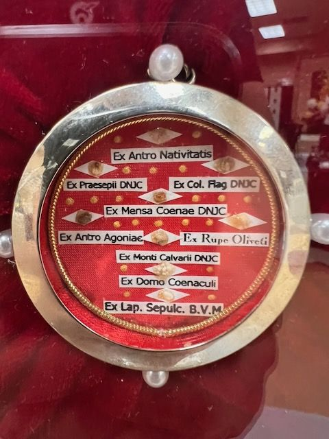

The label is in Latin
Holy Land relics of Christ and the Blessed Virgin
On the label
Ex Antro NativitatisEx Praesepii DNJCEx Col. Flag DNJCEx Mensa Coenae DNJCEx Antro AgoniaeEx Rupe OlivetiEx Monti Calvarii DNJCEx Domo CoenaculiEx Lap. Sepulc. B.V.M.
In English
From the Grotto of the NativityFrom the Manger of Our Lord Jesus ChristFrom the Column of the Flagellation of Our Lord Jesus ChristFrom the Table of the [Last] Supper of Our Lord Jesus ChristFrom the Grotto of the AgonyFrom the Rock of the Mount of OlivesFrom Mount Calvary of Our Lord Jesus ChristFrom the House of the CenacleFrom the stone of the Tomb of the Blessed Virgin Mary.
Saints named
Nine fragments in one theca, each with its own strip. DNJC stands for Domini Nostri Jesu Christi (of Our Lord Jesus Christ). The left edges of two strips are cut off (…sepii, …o Agoniae) and are completed as Praesepii and Antro.